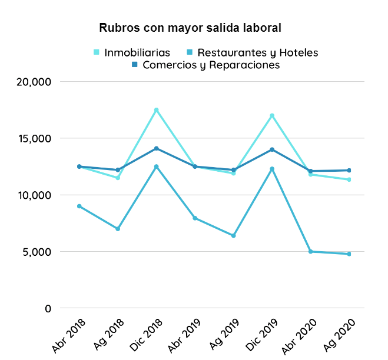
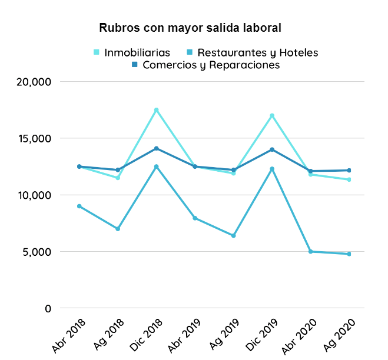
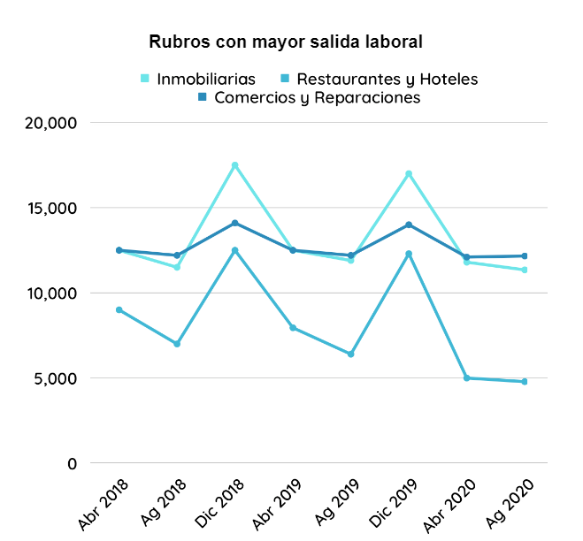

b) ALGUNAS GRAFICAS
 


1) REGIONALIZACIÓN ECONÓMICA Y PRODUCTIVA
2) REGIONALIZACIÓN EN TODO EL TERRITORIO DEL URUGUAY
a) ANÁLISIS REGIONAL
b) MAPA ILUSTRATIVO
3) ACTIVIDAD ECONÓMICA EN MALDONADO
a) ANÁLISIS
b) IMÁGENES ILUSTRATIVAS
4) CARRERAS Y SU INCIDENCIA ECONÓMICA
En primer lugar, cabe resaltar que existen muchas definiciones acerca de la regionalización, dependiendo de varios aspectos, tales como la política de financiación, sistemas políticos y de planificación espacial, hábitos sociales y geográficos, actividades de las personas, entre otros, llevando a la inexistencia de una definición específica de región o regionalización.
Básicamente, una idea que se acercaría a su definición, sería que es un proceso político-administrativo por el cual las regiones actúan como unidades de análisis, siendo relevantes para la actividad económica, política y la prestación de servicios y bienestar.
A través de esta evaluación y contemplación de micro realidades, el gobierno intentará diseñar políticas óptimas y planes de desarrollo para lograr un crecimiento nacional. Por ejemplo, Estados Unidos se identifica por poseer en cada Estado varias normas distintas entre sí; es decir, que cada Estado analiza su “micro realidad” para formular sus propias políticas, siendo menos equitativo en comparación con el caso de Uruguay. En nuestro país las políticas públicas son más jerárquicas, queriendo decir que al formular un decreto o ley, se aplica a todos los departamentos del mismo y estas son implementadas en consideración de todas las situaciones y realidades de cada departamento.
Para lograr una buena red de relaciones gubernamentales, los gobiernos locales deben trabajar en igualdad de condiciones con los representantes de las empresas, comunidad, grupos de voluntarios y la sociedad civil, además de grupos importantes, como las iglesias y los sindicatos. Esto sólo funcionará si el gobierno local está preparado para compartir el poder con otros, lo cual verdaderamente presenta un desafío, ya que el crear una atmósfera abierta y de confianza requiere tiempo y trabajo duro.
El gobierno local enfrenta un desafío particular tanto para liderar como para aceptar los puntos de vista de los socios en un marco igualitario en el que cada uno siente que tiene el mismo papel. En otras palabras, se debe fomentar la equidad de acceso a oportunidades y dejar de lado la atribución de roles de centro (centralización en la capital) y periferia.
Cabe destacar que depende de cada país la forma en la que la regionalización se aplica a la hora de formular políticas públicas. Estas se refieren a las normas y programas formados por una entidad estatal, las cuales generan decisiones a nivel del país y las mismas son llevadas a cabo tomando en cuenta múltiples factores, siendo el entorno y contexto de cada ciudad el principal. El primer paso a tomar para la implementación de políticas públicas es la identificación y definición objetiva de los problemas, los cuales deben ser abordados previamente antes de proseguir con la percepción de una problemática actual o futura, tanto por parte del político como por el técnico. Estas cuestiones son resultantes de, ya sea demandas políticas, demandas sociales, necesidades identificables, juicios de valor sobre cierta realidad y/o compromisos políticos asumidos.
Posteriormente, se debe proceder hacia la creación y selección de soluciones, de tal manera que beneficie a la mayor cantidad de partes.
No existe definición específica de región o regionalización
Normas y programas formados por una entidad estatal
En Uruguay, la regionalización productiva es diversa según el sector este, oeste, norte y sur, y su desarrollo productivo está ligado a numerosas circunstancias, como lo pueden ser el clima, densidad de población, y la litosfera (relieve, calidad de la tierra, etc.).
Por un lado, se encuentra la región metropolitana, la cual se caracteriza por desarrollar acciones de planificación en conjunto. Se compone por tres departamentos que están ubicados al sur del territorio: Montevideo, San José y Canelones. Debido al hecho de que en Montevideo se aloja más de la mitad de la población del país, ofrece un mayor porte económico y productivo, junto con Canelones, en comparación con San José. “…Es el caso de actividades de base primaria e industrias tradicionales como calzados, textil y vestimenta, industria frigorífica, procesamiento de hortalizas y frutas, vinos, bebidas, alimentos y pesca. Pero también de sectores industriales que no son de base agropecuaria, como farmacéutica, caucho y plástico, celulosa, cartón y papel. Así como de actividades de servicios (en este caso, sobre todo en Montevideo) como las telecomunicaciones, informática, operadores turísticos, actividades profesionales, transporte y servicios financieros. Otras actividades productivas corresponden a la industria química, maquinaria y equipos, caucho y plástico y metales y derivados…” (ANÁLISIS REGIONAL – URUGUAY – DESARROLLO PRODUCTIVO REGIONAL Y COOPERACIÓN EMPRESARIAL, s. f.)
Algunos claros ejemplos de empresas con los rubros mencionados son: H&M, Schneck, Conaprole, Microsoft, Buquebus, entre otras.
En cuanto a la Región Este, está formado por los departamentos de Maldonado, Rocha y Lavalleja, siendo el primero mencionado el más vital entre estos y la segunda economía más diversificada y el tercero con mayor número de compañías.
La principal fuente de ingresos de capital en Maldonado se encuentra en el sector terciario, siendo el turismo y toda actividad y servicios relacionados al mismo. Dentro de estos rubros está la hotelería, alojamientos, restaurantes, entretenimiento, recreación, comercios, etc. No obstante, también se puede visualizar a menor escala la existencia del sector primario y secundario (la manufacturación de bebidas, alimentos y lácteos).
Rocha también es beneficiado por la visita extranjera, al igual que Maldonado, en épocas veraniegas. Aquí se puede observar una gran asistencia a festivales, playas, generando una alta tasa de reservas en alojamientos, consumo en restaurantes, etc. Igualmente, esto al ser estacional no es la base de ingresos para este departamento, sino que se cimenta en la industria agropecuaria todo el resto del año, con una industria arrocera relevante.
Por parte de Lavalleja, su economía es más diversificada que la de Rocha, ya que presenta actividades relacionadas con la pesca y su procesamiento, elaboración de bebidas, molinería y minería caracterizada por sus canteras y famosas minas y posee actividades de turismo. Por ejemplo, el festival de minas y abril.
Con respecto a la región Suroeste, está compuesta por Colonia, San José, Soriano, Flores y Florida. En estos cuatro, resalta el desarrollo agrícola y servicios vinculados al mismo, además del lechero, siendo estos altamente avanzados. También se encuentra la industria frigorífica, procesamiento de hortalizas y frutas, molinería, industria alimenticia (tanto para humanos como para animales), transporte de carga y logística.
Dentro de estos, Colonia está caracterizada por su trasfondo histórico, evidenciando infraestructura ancestral, siendo esta muy atractiva para los turistas, además del hecho que es un punto estratégico por su corto tramo de 45 minutos que posee hacia la ciudad autónoma de Buenos Aires. Por esta razón se encuentra ubicada una de las dos centrales de Buquebus , la cual provoca un gran movimiento tanto interno como externo. Asimismo, aparecen los sectores de maquinaría, los de equipo, celulosa y papel; los lácteos, maltas, frigoríficos, alimentos, bebidas y vinos.
Por otro lado, el litoral Noroeste (Salto, Paysandu y Rio Negro), se encuentran entre los ocho mas diversificados del territorio nacional. Se basan en el sector primario y agroindustrial, teniendo un alto impacto en la industria láctea, el transporte y logística, procesamiento de frutas y hortalizas, y finalmente en la manufacturación de raciones. Mientras que en Rio Negro se resalta la industra de la celulosa, gracias al establecimineto de la empresa UPM, en Paysandu existe un foco dirigido hacia lo que es la metalurgica y logistica e industra quimica (aserrado de madera y malteria). Finalmente, Salto posee actividades primarias como la molinería y otras basadas en el turismo, ya que las termas se ubican allí.
En relación a Artigas y Cerro Largo, al poseer frontera con Brasil, tiene una alta influencia en la población, tanto social y cultural como económica. Estos dos departamentos altamente dependen de la producción primaria y no son tan afectados por los sectores industriales y servicios. Particularmente en el caso de Cerro Largo, resalta su sector molinero (arroz), servicios agrónomos y su industria frigorífica. Asimismo, Artigas está grandemente condicionado por su industria arrocera, procesamiento de hortalizas y a diferencia de la mayoría de los departamentos, es vital la producción de azúcar y etanol ubicada mayormente en Bella Unión.
Acerca de Rivera, Durazno, Tacuarembó y Treinta y Tres, se concentran en la actividad agropecuaria y un limitado desarrollo de servicios y actividades industriales. Específicamente hablando de Durazno, el mismo se centra en la elaboración de raciones e industrias frigoríficas. Por otro lado, Tacuarembó tiene una alta influencia en la generación de energía a través de la biomasa, industria frigorífica, manufacturación de bebidas alcohólicas, y su altamente conocida industria de maderas aserradas. Mientras que Treinta y Tres sólo se destaca por su industria arrocera, Rivera posee su mayor fortaleza en la tabaquería y elaboración de madera aserrada.
Para empezar, como se mencionó anteriormente, la principal fuente de ingresos y capital en el departamento de Maldonado es todo aquello relacionado con la actividad turística. Esto se ve reflejado en los datos proveídos por la Cámara Empresarial de Maldonado, donde se logra observar que asistieron alrededor de 153 mil visitantes dentro el primer trimestre de 2022, siguiéndole la capital de Montevideo, con tan sólo 71 mil visitantes, lo cual es menos de la mitad.
A su vez, se registró un ingreso de capital total de aproximadamente 240 millones de dólares, siendo este dividido por persona en USD 1566 y por día unos USD 123.
Este gasto total evidencia la crucialidad del ingreso en base al turismo en Maldonado, debido a que aún sumando las ganancias obtenidas por aquellos departamentos que también se benefician del turismo, estas llegan a duras penas a la mitad de las entradas económicas de Punta del Este.
Cabe destacar que dos tercios de la totalidad de turistas que ingresan a territorio uruguayo son de nacionalidad Argentina. Sin embargo, actualmente esto se ve afectado por la situación económica actual de este país, pues su moneda nacional se ha devaluado exponencialmente, no solo afectando el gasto de estos turistas, sino también el número de argentinos que llegan al Uruguay.
Uno de los puntos más fuertes a nivel turístico en nuestro departamento es conocido como “La temporada de cruceros”. Este fenómeno consta de la llegada de visitantes por medio marítimo, siendo Punta Del Este el segundo más elegido por los mismos. Montevideo es la primera opción, porque es mucho más económica para el extranjero, existe más circulación de cruceros, y posee una infraestructura más avanzada, facilitando el ingreso de turistas mediante este medio de transporte. En el caso de Maldonado, el puerto consta de una profundidad menor a la mínima necesaria para el estacionamiento de cruceros; por ello los turistas deben desembarcar en las costas del departamento a través de lanchas.
Dentro de la temporada de 2019 a 2020 el Ministerio de Turismo emitió una encuesta, observando los aspectos más positivos y negativos de Punta Del Este, siendo las playas y cordialidad versus los precios elevados respectivamente.
Según el informe de Grupo Radar, las empresas dentro de Maldonado se clasifican en cuatro tipos, dependiendo de la cantidad de mano de obra. Comenzando por las micro empresas (de 1 a 4 trabajadores), siguiéndole las empresas pequeñas que poseen entre 5 a 19 trabajadores, luego las compañías medianas entre 20 a 99 empleados, y finalmente, las empresas grandes, las cuales emplean a más de cien personas. En el caso de las micro empresas, según los datos brindados estas comprenden un 86%; las pequeñas un 12%; las medianas un 2%, mientras que las grandes no llegan ni a un 1%.
De todos estos negocios, los rubros que ofrecen mayor salida laboral son: actividades inmobiliarias, empresariales y de alquiler, las cuales crean más puestos de trabajo en los meses de temporada alta (Diciembre,Enero y Febrero).Cabe mencionar que esta tendencia de aumento de puestos de trabajo en verano es similar en cuanto al rubro de restaurantes y hotelería, siendo su pico aún mayor que los anteriormente mencionados. Por otro lado, la salida laboral de los comercios y reparaciones es relativamente alta y constante durante todo el año.
A pesar de todos estas salidas laborales, la pandemia tuvo un impacto crítico dentro de la economía a nivel de país. Tal fue el efecto que modificó el porcentaje de desempleo, subsidios, seguros de paro, y endeudamiento.
Con respecto al subsidio, en nuestro departamento durante los meses de agosto a febrero del año 2020, la indemnización por desempleo se elevó hasta un 202%, alcanzando un máximo en mayo del mismo año, con unos 14.000 ciudadanos afectados directamente. Dentro de todos estos individuos, los sectores en donde una mayor cantidad de ellos perdieron su trabajo fue dentro del rubro turístico (57%), industrial y comercial (48%), y servicios (26%). Al mismo tiempo, hubo un en general 20% de disminución en la contratación de personal, siendo el mayor porcentaje en la actividad turística con un 57% de decremento.
Este quebranto fue causado mayormente por la caída de ventas (74%) que a su vez está intrínsecamente relacionado con la emergencia sanitaria y cierre de empresas (42%).
En consecuencia generó preocupación en las empresas llevando a unas proyecciones pesimistas para el periodo de 2020 siendo estas no tan erradas con un margen de error máximo menor a 10%. Realmente, en el turismo los ingresos bajaron un 80%, en el sector rural un 73%, en la industria y comercios un 70%, y finalmente en los servicios disminuyó el ingreso un 69%.
Para finalizar, además del susodicho decremento de ingresos y aumento de desempleo, hubo un endeudamiento total de 61%; dentro de este el 42% de las empresas encuestadas sufrió un endeudamiento mayor al año anterior, el 13% tuvo el mismo endeudamiento y tan solo el 6% culminó con menos deudas.
Cabe resaltar que el incremento de pagos en potencia fueron destinados un 70% a sueldos, aguinaldos, y costos fijos; un 52% a deudas con proveedores y bancos; compra de insumos un 19%; siguiéndole otros porcentajes menores.
A decir verdad, es sorprendente observar que las instituciones con las que las empresas se endeudaron fueron mayormente con organismos del Estado (DGI, BPS, Intendencia, etc.), atribuyéndole un 44%, y luego con proveedores (33%), bancos privados (32%), entre otros.
A pesar de todos estos aspectos negativos que trajo consigo la pandemia, hay otros que fueron positivamente impulsados por esta. Un caso que impactó a nivel global fue la apertura de ventas online, también conocida como e-commerce. Esto benefició a todos los rubros, ya que con las restricciones impuestas en todo el mundo, el confinamiento fue casi que inviolable. Esta herramienta permitió la sustentación y progreso mediante deliverys. Un caso específico se logró observar con las compañías relacionadas al sector gastronómico, que con la previa creación de pedidos ya (aplicación programada y diseñada por alumnos uruguayos de la universidad ORT), lograron distribuir y concretar sus envíos como habitualmente lo harían y respetando todas las medidas de prevención impuestas por el Gobierno.
Aun así, según los datos proporcionados en el análisis del grupo radar, un 66% de empresas dentro del territorio nacional no vende por internet, pero, un 6% comenzaron a realizar esta actividad por todos los beneficios que esta otorgaba.
Sorprendentemente, las empresas que han decidido vender online, optaron por vender mayormente a través s sociales, como Facebook (56%), WhatsApp (49%), Instagram (46%), mientras que un 54% de los negocios poseen su propia página web y un total del 54% que incluye a MercadoLibre, PedidosYa, Booking, etc.
En relación a los sectores vinícolas, oleícolas, y apícola, nuestro departamento se posiciona en el puesto número 5, abarcando 411 hectáreas de superficie y constando con una producción de aproximadamente 3 millones de kg, lo cual es tan solo un 3% de la producción total en el Uruguay. No obstante, al visualizar las estadísticas de producción de olivos, se puede notar un destacamento en nuestro departamento, presentando 283 mil litros vs 322 mil totales producidos, con 60 exportaciones de olivos durante 2020, siendo el departamento de mayor número de productos enviados hacia el extranjero. A todo esto, en el año 2019 las exportaciones de Maldonado representaron el 0,1% del total de Uruguay, con 5.53 millones de dólares destinados al vino y unos 4.13 millones en despojos y subproductos de carnes.
Durante el transcurso de los años, pudo evidenciarse en Maldonado un crecimiento pasivo en la cantidad de colmenas hasta el año 2015, donde se empezó a presentar un número con leves oscilaciones, terminando en 2019 con alrededor de 10.000 colmenas. Sin embargo, esto sólo contribuye a un 2% del total de todas las colmenas en el país, atribuyéndole el puesto 14.
En síntesis, el departamento donde residimos posee una abundancia de recursos y una deslumbrante biodiversidad de flora y fauna. Sus suelos son propicios para la ganadería, la agricultura y la forestación.
Además, claramente es un destino turístico atractivo, por sus llamativas y renombradas costas, en especial en Punta Del Este, ofreciendo una variedad de actividades recreativas y comercios para la inversión; entre estos servicios destacan el alojamiento, restaurantes, operadores turísticos, deportes, venta de bienes y construcción.
Finalmente, es necesario resaltar nuevamente que es la segunda economía departamental más diversificada y la tercera en el número de empresas establecidas. Aún así, también hay especialización e importancia absoluta en el contexto nacional en otros servicios, como los financieros y la educación y formación. Dado el tamaño relativo de su economía en el contexto nacional, Maldonado es uno de los principales precursores en actividades relevantes de la industria de bebidas, alimentos y lácteos, así como en el sector primario.
Dentro de la temporada de 2019 a 2020 el Ministerio de Turismo emitió una encuesta, observando los aspectos más positivos y negativos de Punta Del Este, siendo las playas y cordialidad versus los precios elevados respectivamente.

Con respecto a las carreras escogidas para estudiar en el futuro, ambas están directamente relacionadas con la tecnología y sus avances. Estas son: diseño de videojuegos y animación e ingeniería en sistemas.
Por un lado, la carrera de Santiago Canadell estudiará ingeniería en sistemas,esta carrera universitaria consiste en determinar problemas dentro de sistemas específicos. Es decir, los ingenieros en sistemas, proporcionan soluciones para los problemas que encuentran en el proceso, incluido el diseño de nuevos sistemas, la actualización del hardware y el mantenimiento de un sistema existente. Se basan en lo conocido como coding (programación), lo que significa el proceso de crear un conjunto de instrucciones que le dicen a una computadora cómo realizar una tarea. Y además de esto, también manipula el hardware y se desempeñan en software de estos dispositivos electrónicos.
Por otro lado, la carrera de Melanie Panschow, que es diseño de videojuegos y animación, consiste en una licenciatura de 4 años. El diseño de videojuegos se basa en aplicar el diseño y la estética para crear un juego para el entretenimiento o con fines educativos, de ejercicio o experimentales. Existe un lado creativo y un lado técnico en esta carrera, siendo el aporte de ideas, construcción de prototipos, creación de narraciones interactivas el aspecto que requiere de creatividad; mientras que el lado más técnico consiste en desarrollar la mecánica del juego, e incluso se espera que conozcan un poco de programación, informática y matemáticas.
Como se mencionó anteriormente, ambas carreras se encuentran vinculadas, ya que por ejemplo, para realizar un videojuego se requiere de programación avanzada por parte del ingeniero en sistemas, mientras que para una página web o aplicaciones necesitan de diseñadores de animación para poder crear imágenes ilustrativas e interactivas. Un ejemplo de esto a nivel nacional es PedidosYa, debido a que fue construido a través de una serie algoritmos por ingenieros en sistemas, y las animaciones fueron proveídas por varios licenciados en la carrera de animación.
La aplicación previamente mencionada ha mejorado la economía de miles de empresas a nivel nacional y regional, con presencia en 15 países de latinoamérica. Esta empresa tiene tanto impacto, que desde 2017 cotiza en la bolsa de valores de Frankfurt.
Asimismo, otro claro ejemplo a nivel nacional creado es el videojuego llamado ‘Kingdom Rush’, desarrollado por primera vez en 2011 por la empresa Ironhide Game Studio, ubicada en Montevideo. Claramente, para producir este videojuego se necesitó de diseñadores, al igual que programadores. Este juego ganó varios premios mundialmente aclamados, además de tener un rating de 4.9 estrellas sobre 5 en todas sus plataformas disponibles.
Durante estas últimas décadas, estas dos carreras han experimentado un crecimiento exponencial a medida que la tecnología se ha desarrollado. A su vez, debido a la reciente pandemia que generó el confinamiento en casas, la población mundial ha optado por medios de entretenimiento digitales. Dentro de estas se encuentran las consolas de videojuego con sus respectivos videojuegos y plataformas de streaming, tales como Netflix, Youtube, HBO Max y Amazon Prime. Esto claramente ha beneficiado a los individuos que trabajan en el ámbito tecnológico, incluyendo nuestras carreras, llevando a una salida laboral aún mayor que antes. Cabe resaltar que uno de los mayores beneficios que ambas carreras poseen no es relevante el país (o departamento) de residencia, sino que solo basta con tener una buena conexión a internet, un dispositivo tecnológico capacitado para realizar tales trabajos y la creatividad que esta conlleva.
Actualmente operan en Uruguay más de 1,000 empresas de desarrollo de software, que generan casi 1.000 millones de dólares en exportaciones, principalmente dirigidas a EEUU. Eso convierte al país en uno de los principales exportadores de software del mundo en términos per cápita. Además de la importación, varias empresas internacionales y altamente renombradas han elegido Uruguay como país de destino para colocar sedes. Unos ejemplos de esto pueden ser el caso de Globant y Microsoft. Con 10 años en el país y más de 800 profesionales, Globant refuerza su presencia en Uruguay, anunciando la contratación de más de 350 profesionales para finales de 2021. Además, para los próximos tres años planea duplicar su equipo local y realizar una inversión de 60 millones de dólares.
Por la parte de Microsoft, este no sólo tiene un convenio con la Oficina Nacional del Servicio Civil para desarrollar las competencias digitales de funcionarios públicos, sino que también ha instalado en Montevideo un laboratorio de inteligencia artificial e internet de las cosas, denominado AI & loT Insider Lab, por sus siglas en inglés. Es el primero en Latinoamérica y el tercero fuera de Estados Unidos, sumándose a los existentes en Shanghai y Múnich. La iniciativa se realizará en alianza con el Laboratorio Técnico del Uruguay (LATU).
En conclusión, estas carreras realmente son el futuro, presentando prospectos óptimos en cuanto a su salida laboral, tanto a nivel del país como globalmente, ya que vivimos en una sociedad en la cual la avances tecnológicos cada vez son más vitales y juegan un rol esencial en la vida vida del ser humano en todos sus aspectos.
Alumno 6to ingenieria
Santiago Canadell estudiará ingeniería en sistemas,esta consiste en determinar problemas dentro de sistemas específicos.Los ingenieros en sistemas, proporcionan soluciones para los problemas que encuentran en el proceso, incluido el diseño de nuevos sistemas, la actualización del hardware y el mantenimiento de un sistema existente.

Alumna 6to ingenieria
Melanie Panschow estudiará la carrera denominada como diseño de videojuegos y animación, consiste en una licenciatura de 4 años. El diseño de videojuegos se basa en aplicar el diseño y la estética para crear un juego para el entretenimiento o con fines educativos, de ejercicio o experimentales.
6to de ingenieria